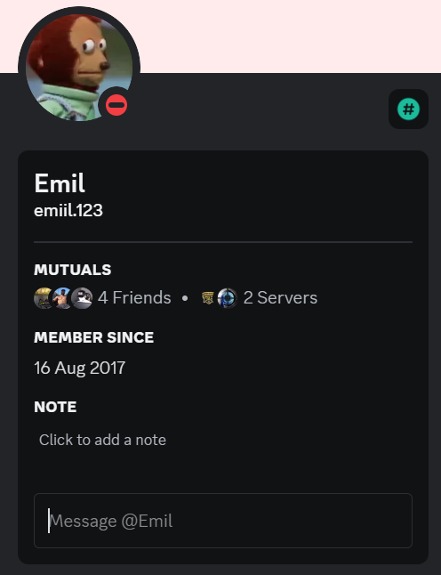
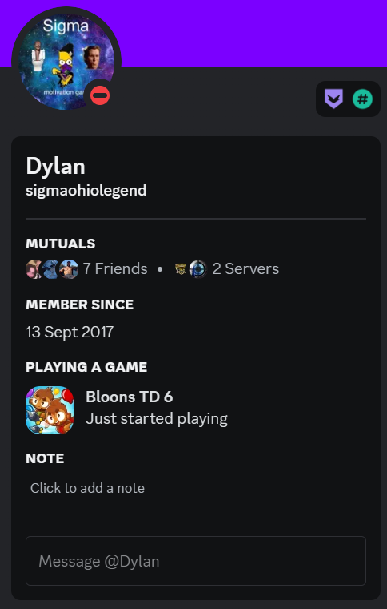
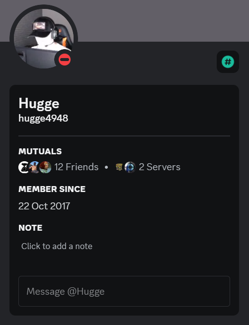
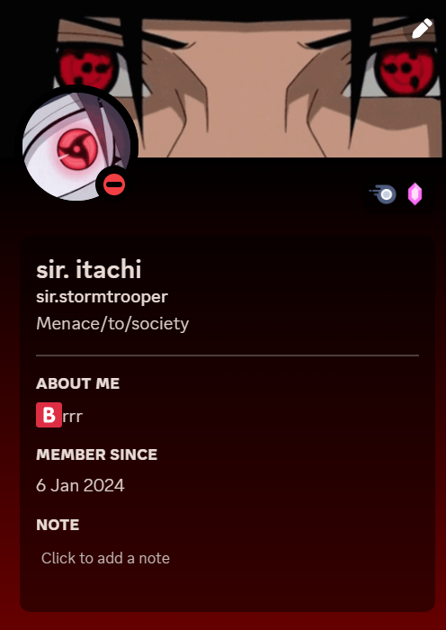
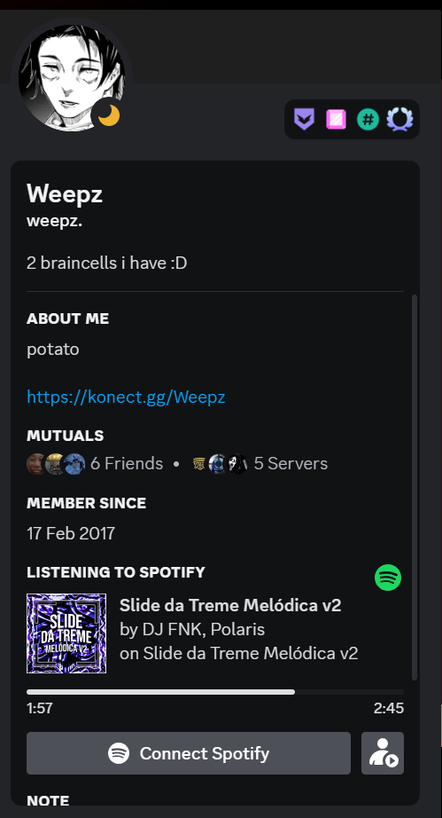

<!doctype hmtl>
<hmtl lang="en">
<head>
    <meta charset="UTF-8">
    <meta name="viewport" content="width=device-width, initial-scale=1.0">
    <meta name="author" Content="Theo">
    <meta name="description" content="head element">
    <meta name="keywords" content="head, html, grunder">
    <title>Grillska Gamblers</title>
    <link rel="stylesheet" href="index.css">
</head>
<body>
<h1>Grillska Gamblers</h1>
<div>
<ul>
<li><a href="index.html"><p>Hem</p></a> </li>
<li><a href="spelare.html"><p>Spelare</p></a> </li>
<li><a href="historia.html"><p>Historia</p></a> </li> 
<li><a href="titlar.html"><p>Titlar</p></a> </li>
</ul>
</div>
    <br>Emil är en av våra inlånade spelare från Alingsås som har gjort en massa för laget och har räddat många rundor. </br>
    <br>Leon "Trident" Är våran coach från Grillska Eskilstuna som har hjälpt till att utveckla laget på en hög nivå tillsammans med William "AangkaN/Aang" Andersson.</br>
    <br>Hugo "Reed" Reed är våran Duelist från Grillska Eskilstuna som är först in på attacken och försöker skapa plats åt oss som vi kan arbeta på och försöka vinna rundor.</br>
    <br>Theo "Itachi" Gislason är våran smoker från Grillska Eskilstuna EX-Grillska Örebro spelare som stänger av motståndarna från att kunna försvara eller attackera oss eftersom att det är en rök imellan oss som folk är rädda att gå igenom.</br>
    <br>Leon "Weepz" Bodin är en Grillska Örebro spelare inlånad till vårat lag för att kunna hålla kontroll så det inte kommer folk bakifrån och skjuter oss, samt att han är jätte duktig på att rädda rundor när det är fler motståndare kvar mot honom.</br>
    <br>Wille "Chefen/Missileman550" Selin är våran hjärna i laget direkt från Grillska Eskilstuna. Han skapar taktiker direkt från hjärnbanken ut på spelplanen. Hans taktiker är skarpa och hjälper oss att vinna varje match vi kört hittilsx.</br>
    <br>William "AangkaN/Aang" Andersson är våran 2:a coach från Grillska Eskilstuna som jobbar med Leon "Trident" för att kunna få laget att prestera riktigt bra. Han specialiserar sig på små detaljer som får oss att utvecklas väldigt mycket.</br>
</body>
</html>